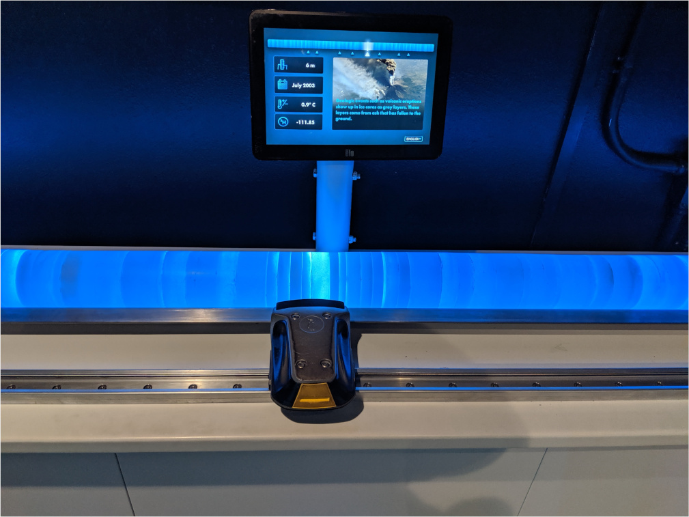

Ice Core

Type of Work
- Software Development
- Microcontroller Integration
- LEDs
I collaborated with a few other developers to help finish the Ice Core Exhibit for the Albuquerque Biopark Penguins Chill exhibit during my time at Ideum. An Ice Core is a large cylinder of ice that scientists usually drill out of a glacier. It is essentially a time capsule that can go back for hundreds of years This exhibit consisted of a faux ice core, as well as a handheld "scanner" to allow visitors to explore how an Ice Core can hold information that is important to scientists. They would use the scanner to "scan" the ice core to see what information it would provide, as well as the time period that each interest point was from.
Most of my work on this exhibit revolved around integrating a linear encoder - which is a sensor that allows you to determine the distance that the sensor has moved - into the Unity application was displayed on the sceen. The linear encoder was an absolute linear encoder in order to ensure that we maintained position during power off periods. The position of the linear encoder was read by an arduino that was then passing information back to the Unity Application.
In addition to the integration of the linear encoder I also spent some time working on the User Interface and testing of this application.
